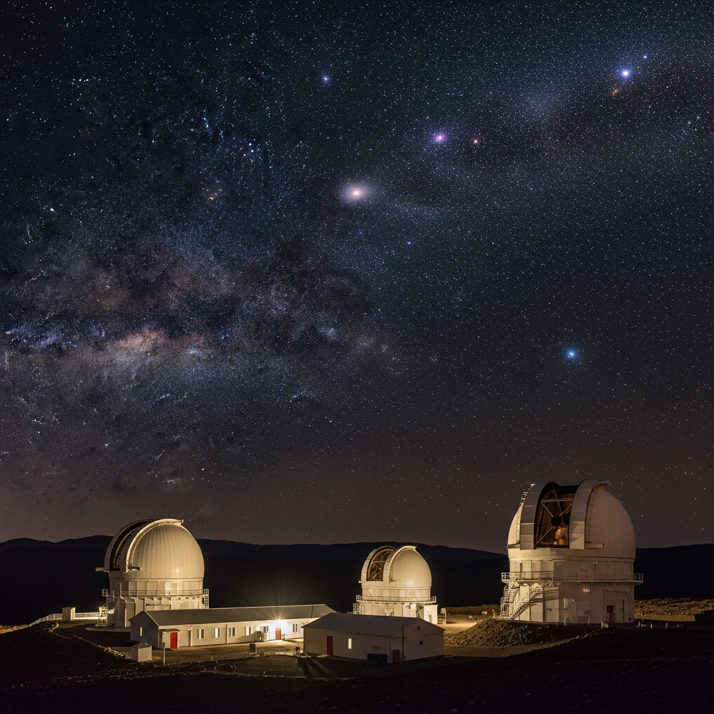

ATLAS Asteroid Terrestrial-Impac Last Alert System
Ubicación:Observatorio el Sauce, Region de Coquimbo Chile
Inicio de operaciones: 2017 (activo)
Tipo de instalación: Telescopio óptico terrestre de rastreo automatico
Objetivo
Detección temprana de Asteroides Cercanos a la tierra (NEOs) y objetos interestelares.
Principales descubrimientos
Observación y estudios clasificados de los asteroides 1I/OUMUAMUA Y 2I/BORISOV
Descubrimiento de 3I/ATLAS (2025) Como objeto intestelar del espacio profundo detectado en transito por el sistema solar, consolidando su reputacion como uno de los principales sistemas de alerta planetaria.
Cooperación Científica
Enlace con radiotelescopios MeerKat (Sudafrica) y Green Bank (EE.UU) Para validación espectral de señales.
Caracteristicas técnicas
Dos telescopios de 0.5M, Campo de vision de 30 grados cuadrados, Camara de CCD de alta sensivilidad, y software de escaneo rapido nocturno.
Operación
Universidad de hawai (ifa) en colaboración con observatorios internacionales.